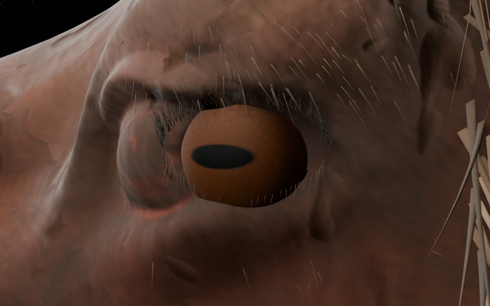
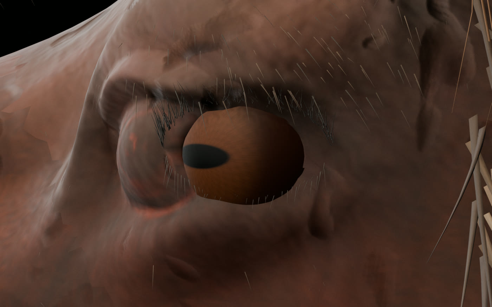
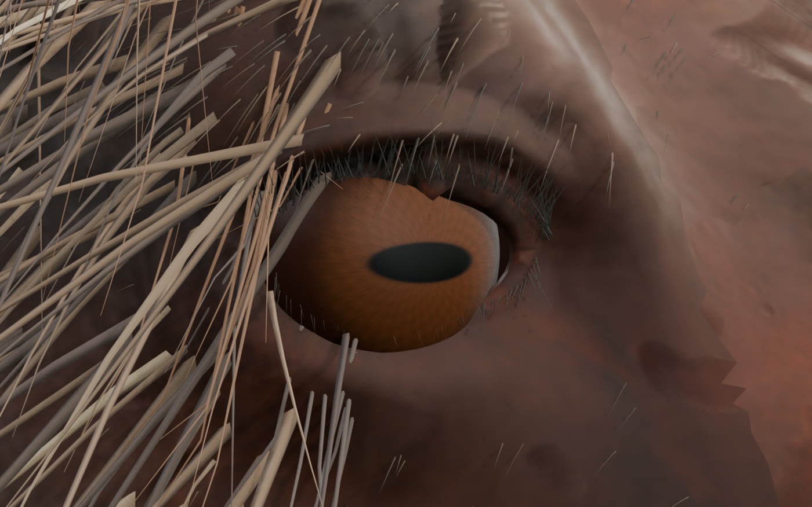
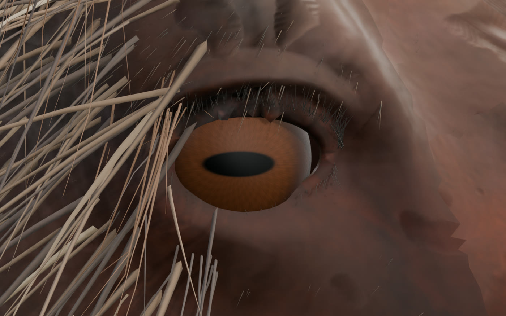
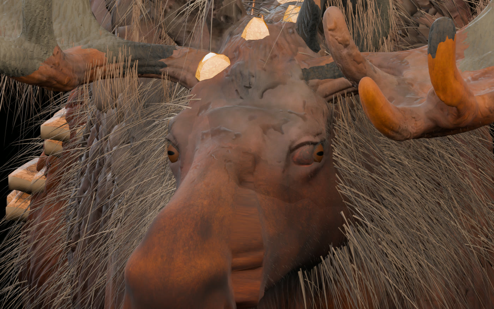
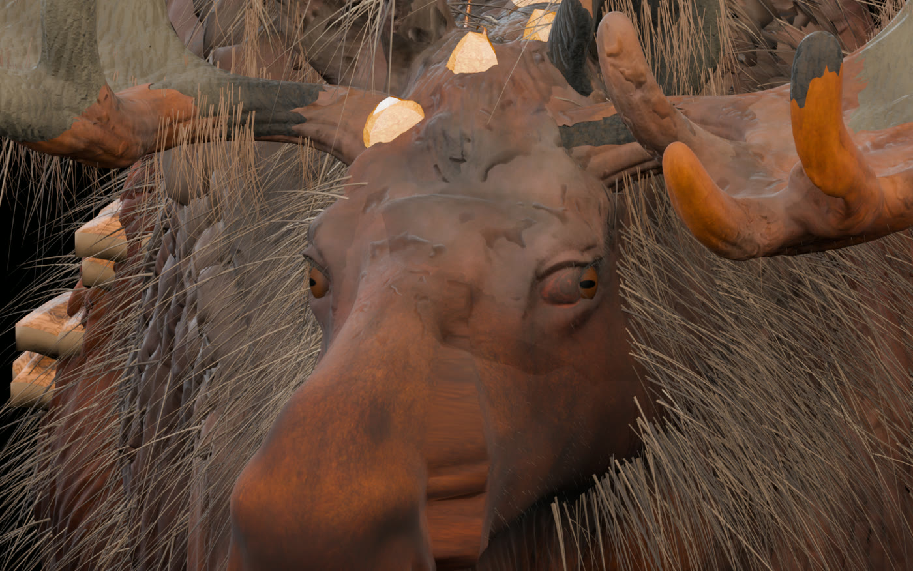

Лось V32E: полностью сферические глаза
Это реальные рендеры исправленной 3D-модели из Blender, не концепт-арт. Вместо старых сплющенных глазных мешей теперь два замкнутых шара: центр вращения находится внутри каждого глаза, а глазницы и череп остаются на месте. Смотрите ниже, как оба глазных яблока независимо от головы переводят взгляд влево и обратно.
ЛЕВЫЙ ГЛАЗПРАВЫЙ ГЛАЗ
Видео собрано из 40 кадров реального Blender-рендера. Клип модели содержит 60 кадров при 24 FPS; в видео кадры прорежены для быстрого просмотра.
Цельная 3D-геометрия2 закрытые сферические сетки по 10 114 вершин. Нет открытых рёбер или отверстий.
Анатомия и материалыЦентральный pivot, 4K PBR-радужка, натуральный горизонтально-овальный зрачок и тёмная склера.
Отдельная анимацияEYES_LOOK_STRAIGHT_LEFT_LOOP. Оба глаза вращаются, а голова и глазницы не привязаны к контроллерам.
Проверка обоих глаз
Нажмите на любое изображение, чтобы открыть реальный рендер крупнее.




Морда спереди


Старый глаз и новая сфера